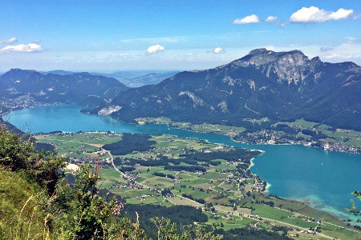

Salzkammergut
nagy tavai
Salzkammergut Ausztria egyik legszebb nyaralóhelye, ahol a tájat a magas hegyek pompája és a kristálytiszta tavak látványa uralja. A legkisebbeket is beleértve több, mint hetven tó található a környéken, ám a legnagyobbak akkorák, hogy megkerülni őket minimum 20, de akár 50 kilométernyi sétát, vagy kerékpározást is jelenthet. Ezek a következők:

| tó neve |
Attersee |
Traunsee |
Mondsee |
Wolfgangsee |
Hallstätter see |
Velencei-tó |
| vízfelülete |
45,9 km 2 |
24,5 km 2 |
14,2 km 2 |
12,8 km 2 |
8,6 km 2 |
25,8 km 2 |
| tszf. magassága |
469 m |
423 m |
481 m |
538 m |
508 m |
100 m |
| legnagyobb mélysége |
171 m |
191 m |
68 m |
114 m |
125 m |
2 m |
| legnagyobb városa |
Seewalchen |
Gmunden |
Mondsee |
St. Gilgen |
Hallstatt |
|
| egyedisége |
legnagyobb |
legmélyebb |
legmelegebb |
legszebb |
leghidegebb |
|
| fotó |
 |
 |
 |
 |
 |
 |